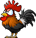

Lv. 20 · #9600001
닭
사납고 공격적인 검은 수탉은 "검은 닭은 알을 낳지만, 흰 새는 검은 알을 낳지 못한다"는 전설이 있듯이, 사람과 자주 싸우며 닭 중에서 가장 뛰어난 닭이다. 투지에 찬 이 닭의 닭발은 매우 튼튼하고, 이 닭다리살은 특히 맛이 좋기로 유명하다.
스탯
레벨 20- HP
- 340
- MP
- 30
- EXP
- 33
- 넉백 가능 데미지
- 1+
- 물리 데미지
- 85
- 마법 데미지
- 0
- 물리 방어력
- 10
- 마법 방어력
- 20
- 속도
- -10
- 20레벨 에서의 필요 명중
- 25.662
- 메소
- 150.0
- 속성관계
- 미기재
- 체경비
- 10.30
- 형태
- 동물형
출현 지역
출현 맵 5개맵 이름을 누르면 메이플노트의 맵 정보가 열립니다.
드롭 테이블
전체 16개| 아이템 | 아이템 ID | 드롭 확률 |
|---|---|---|
| 닭발 | 4000187 | 40% |
| 뻣뻣한 깃털 | 4003004 | 4% |
| 주황 포션 | 2000001 | 1% |
| 파란 포션 | 2000003 | 1% |
| 활전용 화살 | 2060000 | 0.8% |
| 석궁전용 화살 | 2061000 | 0.8% |
| 마법사의 물약 | 2002002 | 0.5% |
| 가넷의 원석 | 4020000 | 0.3% |
| 자수정의 원석 | 4020001 | 0.3% |
| 브론즈 풀 헬름 | 1002051 | 0.16% |
| 붉은색 가람 | 1041030 | 0.01% |
| 검은색 가람 치마 | 1061027 | 0.01% |
| 빨간색 도로시 구두 | 1072062 | 0.01% |
| 미스릴 도끼 | 1312003 | 0.008% |
| 블루 사바타 | 1082016 | 0.007% |
| 상의 방어력 주문서 60% | 2040401 | 0.004% |
조건에 맞는 드롭 아이템이 없습니다.
확률은 메이플노트에 게시된 값입니다. 아이템 이름을 누르면 원본 아이템 정보가 열립니다. 과거 버전 데이터이므로 실제 메이플랜드와 다를 수 있습니다.